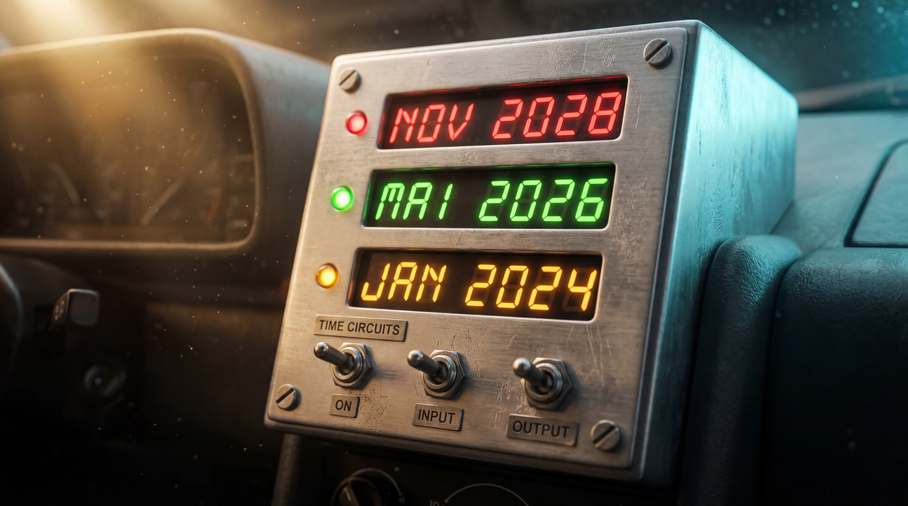

A nova jornada começa agora

A IA mudou de era.
A virada foi rápida. O jeito é caminhar junto.
O que vamos fazer juntos.
-
01Mapear o cotidiano de cada setorMídia · Atendimento
Criação · Planejamento -
02Testar ferramentas com quem fazSem cobrança
Sem afobação -
03Documentar o que funcionaDescartar o que não
Sem apego -
04Construir o repertório RBAAos poucos · Próprio
Não é pacote pronto
Nada disso acontece sem vocês.
Esse trabalho não é...
Substituir pessoas
Não é demitir três e deixar o GPT fazer. Quem fala isso não entendeu o que IA é hoje.
Delegar tudo
Os modelos erram, alucinam, dependem de contexto que só vocês têm. IA sem humano por perto vira máquina de gerar lixo bonito.
Mágica da noite pro dia
Não vai resolver tudo na sexta-feira que vem. É construção lenta, com tentativa e erro.
Esse trabalho é...
Tirar tarefa cansativa de cima
Relatório braçal, copia-e-cola, formatação, busca em PDF, transcrição, organização de pasta. Aquela parte que ninguém escolheria fazer se pudesse evitar.
Liberar tempo para o que importa
Criatividade, julgamento, relação com cliente, estratégia. A parte do trabalho onde o seu olhar e o seu repertório fazem diferença.
Humano sempre no comando
A IA propõe, vocês decidem. A IA rascunha, vocês refinam. A IA encontra, vocês validam. Esse é o pacto.
O objetivo é trabalhar menos cansado, não trabalhar mais.
Como vocês entram nessa.
-
01Conversas por setor Em pequenos grupos, vocês contam o que cansa no dia-a-dia. Não é entrevista — é bate-papo.
-
02Testes guiados Sem cobrança, sem "tem que dar certo de primeira". Experimentação no ritmo do trabalho.
-
03Canais abertos Dúvida, sugestão, reclamação. Tudo conta. Inclusive "isso aqui não funcionou porque…"
-
04Curiosidade reconhecida Quem experimenta ajuda a moldar como a RBA usa IA daqui pra frente.
A gente não
vai fazer isso
para vocês.
A gente
vai fazer
com vocês.